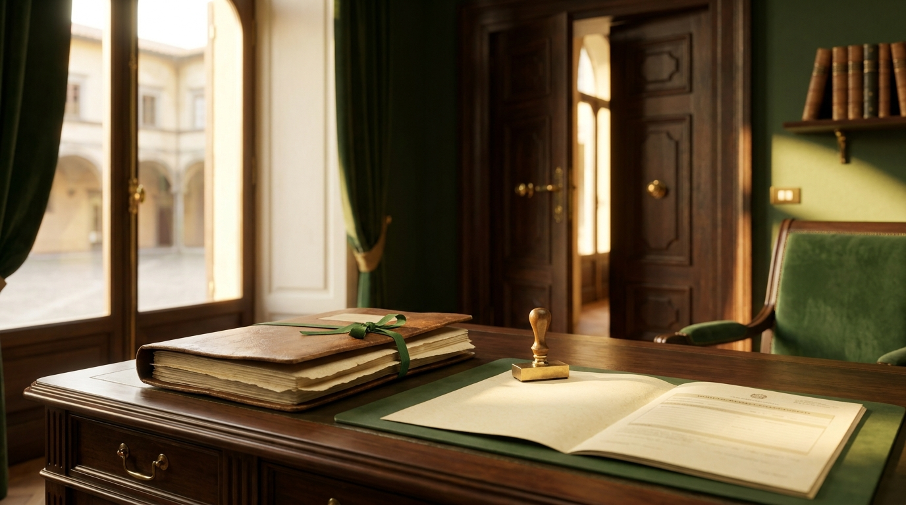

Licenziamento disciplinare nel pubblico impiego e accesso ai concorsi: nessun bando perpetuo
Un titolo a effetto promette che il licenziato dallo Stato dica «addio per sempre» ai concorsi pubblici. La realtà giuridica è più articolata: il licenziamento disciplinare può precludere l'accesso, ma non esiste un'esclusione automatica e perpetua. Contano la causa del recesso, la proporzionalità e le norme vigenti sui requisiti di accesso. Vediamo cosa dice davvero il quadro normativo.

Il claim sensazionalistico e la sua misura
La narrazione del «bando a vita» dai concorsi pubblici per chi è stato licenziato dallo Stato va ridimensionata. Nel nostro ordinamento non esiste un meccanismo che, in modo automatico e perpetuo, escluda dal pubblico impiego chi abbia subito un licenziamento.
Il punto di partenza è l'art. 51 della Costituzione: tutti i cittadini possono accedere agli uffici pubblici «in condizioni di eguaglianza, secondo i requisiti stabiliti dalla legge». L'accesso è dunque un diritto, ma condizionato a requisiti che la legge può legittimamente prevedere. La domanda corretta non è «se» si possa essere esclusi, ma «quando» e «a quali condizioni».
Licenziamento disciplinare nel pubblico impiego: le ipotesi rilevanti
Occorre distinguere le cause del recesso, perché non tutte hanno lo stesso peso.
Il licenziamento disciplinare in senso proprio è disciplinato dagli artt. 55-quater e seguenti del d.lgs. 165/2001 (Testo unico sul pubblico impiego). Riguarda condotte gravi: false attestazioni della presenza in servizio, assenze ingiustificate reiterate, gravi violazioni dei doveri, condanne penali con effetti interdittivi.
Diverso è il licenziamento per insufficiente rendimento (art. 55-quater, comma 1, lett. f-quater e f-quinquies, d.lgs. 165/2001), che presuppone una valutazione di scarsa performance reiterata. Sul piano del disvalore, una scarsa produttività non equivale a una condotta fraudolenta.
Questa distinzione è centrale: il legislatore e la giurisprudenza valutano in modo differente chi è stato allontanato per inefficienza e chi per illeciti gravi.
I requisiti di accesso ai concorsi e l'assenza di automatismi
I requisiti generali per l'ammissione agli impieghi pubblici sono fissati dal d.P.R. 487/1994 e successive modifiche, oltre che dai singoli bandi. Storicamente si faceva riferimento alla categoria della «buona condotta» e all'assenza di precedenti destituzioni: si tratta però di nozioni superate dalle riforme successive, che hanno ridimensionato i requisiti morali generici a favore di previsioni più specifiche.
Nel quadro attuale, l'eventuale preclusione discende non da una clausola di esclusione perpetua, ma da:
- previsioni del singolo bando, che possono richiedere l'assenza di pregresse risoluzioni del rapporto per motivi disciplinari;
- effetti interdittivi connessi a condanne penali, quando il licenziamento è collegato a reati;
- valutazioni dell'amministrazione sull'idoneità del candidato, soggette al sindacato del giudice.
La giurisprudenza amministrativa, in materia, applica con costanza il principio di proporzionalità: l'esclusione deve essere ancorata a una previsione normativa o di bando, motivata e proporzionata alla gravità del fatto. Non sono ammesse esclusioni automatiche e indeterminate nel tempo, perché contrasterebbero con l'art. 51 Cost. e con i principi di ragionevolezza.
In altri termini: un licenziamento per scarso rendimento difficilmente giustifica un'esclusione da ogni futuro concorso; un licenziamento per condotte gravi può incidere, ma nei limiti e nei tempi che la legge o il bando prevedono.
Implicazioni pratiche per chi ha subito un licenziamento
Per il dipendente pubblico licenziato, le conseguenze sull'accesso a nuovi concorsi non sono uniformi. Molto dipende dalla causa del recesso e dal contenuto specifico del bando a cui ci si candida.
Un'esclusione disposta dall'amministrazione, sia come clausola del bando sia come provvedimento individuale, non è un esito inevitabile e non sfugge al controllo del giudice amministrativo. Chi si vede escluso ha strumenti per contestare il provvedimento, soprattutto se manca un fondamento normativo chiaro o se l'esclusione appare sproporzionata.
Cosa fare in concreto
- Verificate la causa esatta del vostro licenziamento: leggete il provvedimento e distinguete tra scarso rendimento e condotte disciplinari gravi, perché gli effetti sono diversi.
- Leggete con attenzione il bando del concorso a cui intendete partecipare: individuate l'eventuale clausola che richiede l'assenza di pregresse risoluzioni disciplinari.
- Candidatevi comunque se la causa di esclusione non è esplicita: un'esclusione successiva potrà essere contestata, ma il diniego preventivo di partecipazione vi priva del titolo per impugnare.
- Rispettate i termini di impugnazione: il ricorso al TAR si propone entro 60 giorni. Per una clausola del bando il termine decorre dalla pubblicazione (quando è immediatamente lesiva); per un'esclusione individuale decorre dalla comunicazione del provvedimento al candidato.
- Raccogliete la documentazione del rapporto cessato e del procedimento disciplinare, utile a valutare la proporzionalità dell'eventuale esclusione.
Consigliamo, a chi si trovi in questa situazione, di non desistere sulla base di titoli giornalistici allarmistici e di far esaminare il caso specifico prima di rinunciare a partecipare.
---
Contributo informativo a cura di Tamburro & Partners - Avv. Giuseppe Tamburro. Non costituisce parere legale.
Ogni storia di lavoro ha i suoi tempi.
Se gestisci HR e vuoi un confronto su contenzioso, ispezioni o licenziamenti, scrivi allo studio. Ti rispondiamo entro un giorno lavorativo.